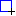

Sina Iravanian
Coach assistant is a tool for creating positioning patterns and visualizing them for a team of coachable players. It can also serve as a tool for visual analysis of the players and their relative positions. It generates Coach Language (CLang for short) statements for the strategy assigned to the team. The generated CLang may need little modification to form a complete team's strategy.
In this writing, from the term team, it is meant a team of coachable players. You may make use of Standard Coachable Players (RCSSCoachable) for this purpose. Also you need a coach to simply open the CLang file and send the statements to the soccer server.
Earlier versions of Coach Assistant were Windows based applications written in C++ using Borland C++Builder. The current version (2.1) is written in Java, and hence is platform independent. You need Java 1.5 to compile and run the application. The source code is also published under GNU General Public License.
In this section you can take a quick guide to grasp the whole idea of what the functionalities of Coach Assistant are. Follow the steps:
Run Coach Assistant. Go to the bin folder and run run.sh or run.bat. You must see a window with a football field in the middle. On top of the field there are the players of the right side and left side teams. Each side has the players 1 through 11 and an extra X player. Let's call the left side team, our team, and the right side team, opp team (short for opponent team). Besides their intuitive meanings, our and opp are valid CLang identifiers. You can drag any players to any positions. In this current version this is only for visualizing purposes, and does not affect the strategy of the team. You can see later that you can define positioning for our players 1 through 11. Our player X, and all the opp players cannot be assigned any positioning, and hence no CLang is generated for them.
Open a sample strategy. Press open button on the toolbar, and go to the samples folder, and select sample352.cas. Now toggle the Move the Ball button on the toolbar; the one with the following icon:
While having this button selected, move the mouse inside the field, and see the players positioning accordingly. In this case the mouse pointer plays the role of the ball and the players are showing their relative positioning regarding the ball.
Generate CLang for this strategy. Press the Export CLang button; the one with the following icon:
Leave the default settings unchanged and press Generate. Choose a file name for the generated CLang file. It's now time to test if the generated CLang file is doing what you expect it to do.
To go to the concept of the player's coefficients, first open coefs1.cas from the samples folder. Right click on our 1 player, and select SomeRegion from the context menu. Now you must see two rectangles on the field. Toggle the Move the Ball button and move the mouse pointer inside the blue rectangle. As you see player our 1 positions in such a way that as if there is a one-to-one map from the points inside the blue rectangle to the points inside the red rectangle. This map is created by performing some arithmetic on the ball's coordination. The CLang counterpart of such arithmetic is shown in the second element of the status-bar which reads:
(((pt ball) * (pt 1.34 0.57)) + (pt 46.84 0.0))
This is interpreted as to form such a map if the ball is inside the blue region then the map is created by multiplying the ball's coordination in the first ordered pair of numbers (in this case (pt 1.34 0.57)) and adding the result points to the second pair of numbers (in this case (pt 46.84 0.0) ). In other references the first ordered pair is referred to as the player's attraction to the ball. In this application and tutorial we refer to the 4 numbers as the player's coefficients.
See coefs2.cas for an example of a horizontal positioning, and coefs3.cas as an example of vertical positioning. In both samples, repeat the steps of this sections for player our 1 again. Line positioning is useful when you do not want a player to move much in order to keep its stamina.
There exists two types of regions in this application: Ball Region, and Player Region. By region we mean a rectangle. Ball Region is drawn in blue, and Player Region is drawn in red by convention. There are two ways to define a region: drawing it by mouse, or specifying it by its coordination.
Draw a region. Let's draw a ball region. Toggle the Draw Ball Region button; the one with the following icon:

Drag the mouse pointer on the field to form a ball region.
Specify a region by coordination. Press the Specify Ball Region button; the one with the following icon:
If you have already drawn (or specified) a ball region, the text fields are initialized with the coordination of that region. Modify the contents, or specify new coordination yourself. Press OK to see the region.
In either cases, if you want to save the ball region with a name to be referred later, press again the Specify Ball Region button; check the Save as check-box and specify a name for it.
To load an already saved region, press Specify Ball Region button; select the Load radio button; and select your region from the list.
The whole process also applies for the player region, with the difference that a player region is drawn in red by convention.
Whenever there's one ball region, and one player region present, the map from the ball region to the player region is shown in status bar. If you intend to use the application for analysis purposes only, you can right-click on status bar and copy the relation to the clipboard.
Only one ball region can be shown at each time. Only one player region can be shown at each time too.
Sometimes you have a map (more specifically a player's coefficients) and want to know what would be the player's region. This normally happens when you are reading CLang statements which are written by somebody other than you. To render a player's coefficients you need the ball's region (the domain of the map) and the coefficients. To do so, press the Specify Ball and Player Region button; the one with the following icon:
The text-fields related to the ball region, are initialized with the currently specified ball region coordination. You can modify the contents, specify them yourself, or load an existing region. The coefficients and their syntax are shown in the dialog. Here C stands for coefficient (the value which is going to be multiplied) and O stands for offset (the value which is going to be added). The text-fields for these four values are also initialized with the relation between the currently specified ball and player regions.
In this section we briefly introduce easy ways/tricks to change regions' coordination.
Change the coordination of a region's corner. Press specify region, and modify the corner's coefficients.
Move a player's region some meters horizontally. Open render formula dialog. Add the value of O1 with the desired distance.
Move a player's region some meters vertically. Open render formula dialog. Add the value of O2 with the desired distance.
Make a player's region horizontally wider/narrower. Open render formula dialog. Increase/decrease the value of C1.
Make a player's region vertically wider/narrower. Open render formula dialog. Increase/decrease the value of C2.
It is probably obvious for you that if there exists some points in the field, for which a player has no positioning assigned to, that player does not move if the ball enters those areas. In order to create a complete positioning as seen in Sample352.cas one needs to cover all the field.
If you want to use a region as a ball region to define positionings for, that region must be a partition. To declare a ball region, as a partition. Do the following steps.
Specify your ball region. Either by drawing or specifying it by coordination. See Section 4 for more details.
Assign a name for your region. Open the Specify Ball Region dialog; Select Save as, and specify a name for it.
Add your region to the set of partitions. Press the View Partitions button; the one with the following icon:
In this dialog, you can see all the regions saved so far, and a list of partitions. If this list is empty, it means that you have created no partitions at all. Also at the far left side of the dialog, you can see a handy way of creating and saving new regions fast. To add a region to the list of partitions, first select the regions from the list entitled All the Regions. Having selected them press the button with caption > to add the selected regions to the list of partitions. To remove some regions from the list of partitions, simply select them in the list of Partitions, and press the button with caption <.
It is not necessary for the partitions to not overlap. Also it is not necessary for the union of the partitions to cover the whole field. If a certain player has been assigned positioning in two overlapping partitions, then the behavior of the player in the overlapped area is undefined.
Referring to Sample352.cas again, the field is partitioned simply into two regions called OurHalf, and OppHalf. The union of the two is the whole field. But in Sample coefs1.cas there is only one partition which does not cover the field.
Having defined partitions, it is now time to assign positioning of the players when the ball enters any of the partitions. You can view any of the partitions names, by right clicking on any of our players 1 through 11, and selecting one by name. Now it's time to define your desired player positioning for this partition. Draw a player region either by specifying its coordination, or drawing it, as described in section 4. Now there are two ways to assign what you have drawn to a specific player to position accordingly:
1. Right click on your player of choice, and select, Set Specified Region. To test if it had worked toggle Move the Ball, and see the result.
2. Right click on the second element of the status bar where the coefficients of this positioning is written. Select Set For, and choose the player from the sub-menu. Again toggle Move the Ball to test if it had worked.
To form a complete strategy, one needs to assign positioning for each of the players in each of the partitions. That would add up to the number of partitions times the number of players, player regions. Referring to Sample353.cas it defines positioning for players 2 through 11, in two partitions, which will be a total 20 player regions. (Player 1 is left out, because Standard Coachable Players provide default positioning for the goalie. Anyway if one needs to customize positioning of the goalie, he/she must define positioning for the goalie too.)
If you want to speculate, how a certain player positions in different partitions, right click on the player, and select the partitions, one by one. The blue region, is the ball region (or the partition itself) and the red region is the player's assigned region to position. If there is no region specified for a partition, then there will be no red region drawn on the field. You can test this section using Sample352.cas.
To change an existing positioning assigned to a player, you must define a new player region, and assign it again to the player. To modify an existing ball region you may find it useful to see section 6. First visualize the existing region, by right clicking on the player, and selecting the partition name, from the context menu. After you have created the new region, it is not assigned to the player unless you do it explicitly. For this purpose, either right click on the player and select Set Specified Region, or right click on the second element of the status-bar, and select Set For, and specify the player's number from the sub-menu. Toggle Move the Ball and move the mouse pointer on the ball region to make sure that the new region is assigned to the player.
To generate CLang statements of the strategy currently open, press the Export CLang button; the one with the following icon:
Here it comes a description for each option:
Prefix. Prefix is the user's defined rule name prefix. In the generated CLang the positioning rule names are by default made up of the term RULE plus the region name (i.e. partition name) plus the player's uniform number. One can specify a prefix to be placed between RULE and the region name.
Positioning Radius. By defining a positioning radius, the players do not have to position to an exact point, but they position into a circle around the point with a certain radius. The circle's radius is referred to as the player's Positioning Radius. While using Standard Coachable Players it is not needed to make use of positioning radius.
Generate Shooting Capabilities. Generates a set of rules which enables a player who is close enough to the opponent goal to shoot the ball rather than passing it to another teammate.
Add play-mode play-on Condition. Sets (or ands if not empty) the conditions of generated positioning rules with (playm play_on) condition.
Add Custom Condition. Ands the conditions of the generated positioning rules, with the user provided condition. The syntax of the condition must be checked by the user himself/herself. Obviously, to obey the syntax of CLang the condition must be enclosed in parentheses.
Freedom Radius Condition. As an example consider that the user has specified a Freedom Radius of 2.0 meters. It means that if the distance of the player from the ball is more than 2.0 meters they follow the positioning rule, otherwise the positioning rule does not fire (it might be more wise for the player to intercept the ball rather than position to some other point). The user can later add some hand coded rules, for his/her desired behavior for such cases. While using Standard Coachable Players, the closest player to the ball intercepts the ball by default, and hence there is no need to specify Freedom Radius, unless the user intends some other behaviors.
Initially earlier versions of Coach Assistant were created for some research about recognizing patterns of positioning of the players of a team and describing them in CLang. During RoboCup 2005 Coach Competitions (held in Osaka, Japan) all the positioning and overall behavior of the patterns were generated using Coach Assistant. Also in RoboCup 2006 Coach Competitions (held in Bremen, Germany) all the 100% of the overall behaviors of the participants' submitted patterns, were based upon the patterns which were created using the same software.
For the coming Coach Competitions, there is an argument on how to create/generate realistic patterns. Unfortunately currently this software is by no means an automatic pattern creation tool. But it can help speeding up creating patterns, and through its visual environment helps creating reasonable realistic behaviors. Minor modifications might be needed to make different patterns out of a certain base strategy.
Coach Assistant can be extended to visually design other behaviors rather than positioning (behaviors such as, passing, dribbling, or some other composite actions). Also it might serve as the base for the tool officially used for creating patterns. Also it can be extended to an automatic pattern creation tool.
Last updated on October 23, 2006